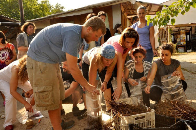

Quem Somos
A ONG Esperança é uma organização sem fins lucrativos dedicada a promover a educação, a inclusão social e o desenvolvimento comunitário. Atuamos em projetos que transformam realidades e oferecem oportunidades para crianças, jovens e famílias em situação de vulnerabilidade.
